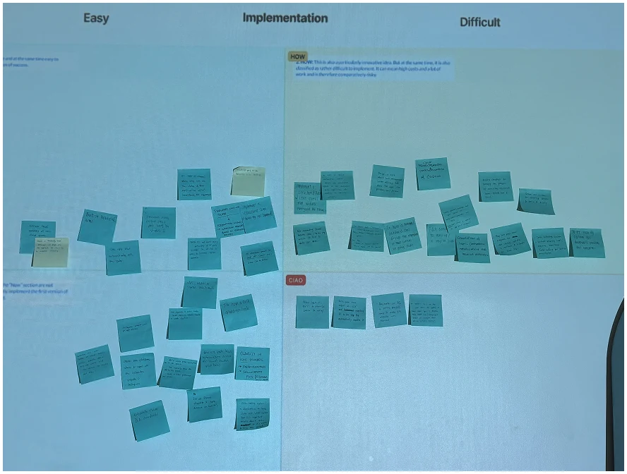

Card sorting

We sort (again) the cards into those five areas, allowing me & Fyn to synthesize similar ideas to be able to facilitate an affinity mapping activity with the team. I co-PM the project with the CEO herself, which to us designers is ideal because we’re able to soundly assess technical complexity to tango with the stakeholders’ timelines.